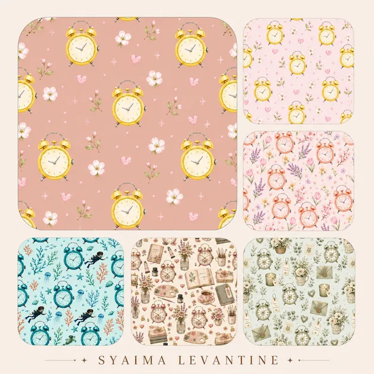

Setelah makan malam, aku mengambil ponsel dan memotret jam tanganku.
Tidak ada rencana besar.
Tidak ada moodboard.
Tidak ada brief dari klien.
Cuma penasaran.
Aku upload foto itu ke Pattern Studio AI karena ingin melihat kira-kira apa yang muncul setelah upload 1 foto jam tangan. Aku pikir, setelah ini mungkin aku akan mendapatkan beberapa eksplorasi objek yang menarik.
Ternyata…
Yang ada, aku malah nyasar ke dunia pattern. 😅
Awalnya cuma mau coba satu modifikasi foto tadi menjadi satu pattern.
Eh malah coba satu lagi.
“Hmm… kalau warnanya diganti bagaimana?”
“Kalau temanya dibuat nautical?”
“Kalau dibuat floral?”
“Kalau yang ini dibuat lebih vintage?”
Dan begitulah masalahnya.
Bukan karena hasilnya jelek.
Justru karena terlalu seru untuk berhenti, dan malah coba-coba terus.
Dari satu foto, tiba-tiba jadi macam-macam, kan?! Hahaha.
Begitulah, yang tadinya cuma foto jam tangan, sekarang berubah menjadi berbagai arah visual.
Ada pattern dengan penyelam (aku diver anw), kerang, alga, dan penyu.
Ada juga pattern floral dengan warna-warna lembut.
Lalu muncul versi yang lebih romantis, botanical, nursery, sampai pattern dengan nuansa vintage patisserie.
Di titik tertentu aku bahkan lupa tujuan awalnya, wkwk.
Aku tidak lagi berpikir,
“Apa yang bisa dibuat dari bentuk jam ini?”
Tapi malah berubah menjadi,
“Sipp lah, ini pattern jamnya cakep banget, sayang kalau satu doang. Dibuat apa lagi ya? Keluarlah berbagai macam tema yang berbeda, selalu pertanyaannya, “bakal jadi apa lagi ya?”
Dan ternyata pertanyaan kedua jauh lebih berbahaya.
Karena satu ide bisa membuka ide berikutnya.
Dan ide berikutnya membuka ide lainnya lagi.
Tahu-tahu sudah larut malam.
Yang tadinya eksperimen, berubah jadi koleksi
Hal yang paling menarik dari eksperimen ini bukan cuma jumlah pattern yang akhirnya terkumpul.
Aku mulai melihat bahwa satu foto bisa menjadi titik awal untuk mengeksplorasi banyak kemungkinan visual.
Satu objek tidak harus berhenti sebagai satu gambar.
Ia bisa menjadi motif.
Motif bisa menjadi pattern.
Dan beberapa pattern dengan arah visual yang berbeda, dan bahkan berkembang menjadi sebuah koleksi.
Itulah yang akhirnya terjadi malam itu.
Aku mulai menyimpan hasil-hasil yang menurutku paling menarik.
Tiba-tiba aku punya ide lebih gila, “sayang banget kalau ini ga aku cetak?!”. Aktivitas iseng apa lagi yang bisa bikin kamu jadi owner POD dalam waktu 24 jam? Atau setelah ini aku jadi juragan merchandise, jualan online dari rumah? 😂
Malam itu aku panen, menyimpan koleksi baru sebagai digital assets. Submit microstock duluan, sebelum jadi ide turunan lainnya.
Karena siapa tahu nanti ada ide untuk membuat fabric, wallpaper, stationery, packaging, print-on-demand, atau produk lainnya.
Tidak harus selesai jawabannya malam itu juga kan.
Yang penting, asetnya sudah ada.
Lalu datanglah pagi hari
Pagi harinya, aku membuka lagi semua hasil yang dibuat malam sebelumnya.
Dan baru terasa:
“Lho… kok koleksinya banyak banget?” 😅
Setelah sedikit editing dan merapikan beberapa detail, aku kemudian memeriksa seamless-nya melalui Spoonflower, pilih ini karena online dan gratis. Sekalian lihat mockup pattern-nya dalam beberapa produk.
Aku ingin memastikan pattern tersebut benar-benar bisa diulang dengan baik (seamless), bukan cuma terlihat bagus ketika dilihat sebagai satu gambar.
Setelah proses editing ringan dan pengecekan selesai, akhirnya aku punya satu koleksi pattern yang sebelumnya sama sekali tidak ada dalam rencana kemarin malam.
Ini beberapa dari hasil akhirnya:

Lumayan juga kan, untuk sebuah eksperimen yang awalnya cuma dimulai dari foto jam tangan setelah makan malam😂
Satu foto ternyata bisa punya umur yang lebih panjang.
Dari pengalaman sederhana ini, aku jadi melihat foto dengan sedikit berbeda.
Kadang kita mengambil foto hanya untuk mendapatkan satu gambar.
Selesai.
Tapi bagaimana kalau foto tersebut justru kita jadikan bahan mentah untuk eksplorasi berikutnya?
Dalam kasusku, satu foto jam tangan ternyata bisa menjadi titik awal untuk menghasilkan berbagai pattern dengan karakter yang sangat berbeda.
Dan setelah pattern-pattern tersebut selesai dibuat dan dicek, aku tidak perlu buru-buru memutuskan semuanya akan menjadi apa.
Aku bisa menyimpannya sebagai aset digital.
Besok bisa jadi fabric.
Minggu depan mungkin stationery.
Bulan depan bisa saja packaging.
Atau mungkin ternyata ada ide produk lain yang belum terpikirkan sekarang.
Dan menurutku, justru itu bagian yang menyenangkan.
Tidak semua aset kreatif harus langsung punya tujuan.
Kadang cukup dibuat dulu, disimpan dengan baik, lalu menunggu ide yang tepat datang.
Jadi, sebenarnya apa yang terjadi malam itu?
Aku awalnya hanya ingin melihat apa yang bisa dilakukan Pattern Studio AI dengan satu foto jam tangan.
Tapi beberapa jam kemudian, aku malah punya satu koleksi pattern.
Dari satu foto menjadi beberapa visual direction.
Dari beberapa visual direction menjadi pattern.
Dan dari pattern menjadi digital assets yang siap dikembangkan menjadi berbagai kemungkinan produk.
Bukan hasil yang aku rencanakan.
Tapi justru itu yang membuat eksperimennya menarik.
Karena kadang proses kreatif memang seperti itu.
Kita masuk hanya untuk mencoba sesuatu sebentar.
Lalu tahu-tahu…
“Eh, kok sudah punya satu koleksi?” 😅
Apa kabar galeri ponsel aku yang udah 20ribu foto? Sebaiknya kita isi waktu iseng berikutnya dengan bongkar-bongkar galeri😂
✨ Syaima’s Notes
Mungkin ini yang paling aku suka dari eksplorasi seperti ini.
Bukan karena AI bisa membuat pattern.
Tetapi karena AI bisa membuat kita melihat kemungkinan baru dari sesuatu yang sebenarnya sudah kita punya.
Dalam kasusku, bendanya cuma satu:
sebuah foto jam tangan.
Hasil akhirnya?
Satu koleksi pattern yang sekarang tersimpan sebagai aset digital dan siap menunggu giliran untuk menjadi sesuatu yang lain.
Satu foto. Banyak kemungkinan.